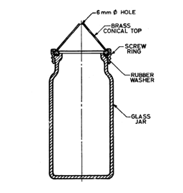

Specific Gravity of Cement and Aggregates
INTRODUCTION
Specific Gravity of Cement :
Specific Gravity is ratio of weight of a volume of a particular material to the weight of the same volume of water at a specified temperature. Every material has solid particles and pores which may contain water in it. Normally nominal mix design is based on the value of Specific Gravity of cement as 3.15. The value will change over time if the cement is exposed to various weather conditions. So it is essential to determine the Specific Gravity of Cement before using it. We all know that water cement ratio is an important factor which is directly proportional to workability and the strength of a bonding. If the cement has already more moisture in it then, the value of water cement ratio will actually affect the workability and strength rather than increasing it. If the Specific Gravity of cement is greater than 3.19 then, the cement is either not minced finely as per the industry standard or it has more moisture content which will affect the mix and bonding.
Kerosene is the reference material for determining the specific gravity of cement. The reason for the use of kerosene as the reference material is that, unlike water, kerosene does not undergo any reaction when added to cement (when water is added to cement, hydration occurs). Kerosene has a specific gravity of 0.79 g/cc.
Standard Le-Chatelier flask conforming to the dimensions shown in figure is used to determine Specific Gravity of cement. The samples of the cement shall be taken in accordance with the requirements of IS : 3535-1986 and the relevant standard specification for the type of cement being tested.
Standard Le-Chatelier Flask
( Source: IS 4031 (Part II) - 1999 )
Relevant Indian Standard for Specific Gravity on Cement :
- IS 4031 (Part II) – 1988: Methods of Physical Tests for Hydraulic Cement, Reaffirmed 2002.
Specific Gravity of Fine Aggregates :
The aggregate passing through 4.75mm sieve size is called as fine aggregate. Natural sand is generally used as fine aggregate, silt and clay are also come under this category. IS specifications classify the fine aggregate into four types according to its grading as fine aggregate of grading Zone-1 to grading Zone-4. The four grading zones become progressively finer from grading Zone-1 to grading Zone-4. 90% to 100% of the fine aggregate passes 4.75 mm IS sieve and 0 to 15% passes 150 micron IS sieve depending upon its grading zone. The purpose of using fine aggregate in concrete is to fill the voids in the coarse aggregate and to act as a workability agent.
| Fine aggregate | Size variation |
|---|---|
| Coarse Sand | 2.0mm - 0.5mm |
| Medium sand | 0.5mm - 0.25mm |
| Fine sand | 0.25mm - 0.06mm |
| Silt | 0.06mm - 0.002mm |
| Clay | < 0.002 |
( Source: IS 2386 (Part III) - 1963 )
The fine aggregate Specific Gravity test is used to calculate the Specific Gravity of a sample by determining the ratio of the weight of a given volume of aggregate to the weight of an equal volume of water. Aggregate Specific Gravity is used in a number of applications including in mix design, deleterious particle identification and separation, and material property change identification etc. Generally the material's weight is typically measured and then converted to a volume based on its Specific Gravity. Correct and accurate material Specific Gravity determinations are vital to proper mix design. An incorrect Specific Gravity value will result in incorrectly calculated volumes and ultimately result in an incorrect mix design. Specific Gravity can also indicate possible material contamination, large amount of deleterious material in an aggregate sample may result in an abnormally low Specific Gravity. Specific Gravity differences can be used to indicate a possible material change. A change in aggregate mineral or physical properties can result in a change in Specific Gravity.
Specific Gravity of Fine Aggregate,
Where,
W1 = Weight of the empty flask
W2 = Weight of the flask + fine aggregate
W3 = Weight of the flask + fine aggregate + water
W4 = Weight of the flask + water
Relevant Indian Standard:
- IS:2386 (PartIII)-1963: Methods of Test for Aggregates for Concrete.
Specific Gravity of Coarse Aggregates :
Aggregates are the important constituents in concrete. They give body to the concrete, reduce shrinkage and effect economy. Normally, aggregates come from a stockpile stored outside and thus contain varying amounts of water, depending on recent rainfall, outside temperatures, relative humidity and so forth. However, in the normal mix design procedure, aggregate weights will be based on a saturated surface-dry (SSD) condition or on an oven-dry (OD) condition. Specific gravities of both fine and coarse aggregates may be calculated for either moisture conditions. When the aggregate is sieved through 4.75mm sieve, the aggregate retained is called coarse aggregate. Gravel, cobble and boulders come under this category. In general, 40mm size aggregate used for normal strengths and 20mm size is used for high strength concrete.
| Coarse aggregate | Size variation |
|---|---|
| Fine gravel | 4mm - 8mm |
| Medium gravel | 8mm - 16mm |
| Coarse gravel | 16mm - 64mm |
| Cobbles | 64mm - 256mm |
| Boulders | > 256mm |
( Source: IS 2386 (Part III) - 1963 )
Each material added to the concrete mix has a particular weight (excluding air) and a particular solid volume (including air). The relationship between the weight and the solid volume for any material depends on the Specific Gravity of that material. Specific Gravity, which is related to the material’s density, is the weight of the material divided by the weight of an equal volume of water. Each individual particle of aggregate consists of solid matter and pores, and the pores may or may not contain water. Because the aggregate weight will vary depending on the amount of moisture in these pores and on the aggregate particle surface, Specific Gravity will be determined at fixed moisture content. It can be measured by using pycnometer or wire basket method. Finally the ratio of weight of an aggregate to the equal weight of water will give the Specific Gravity of that aggregate.
Specific Gravity of Coarse Aggregate,
Where,
W1 = Weight of the empty flask
W2 = Weight of the flask + coarse aggregate
W3 = Weight of the flask + coarse aggregate + water
W4 = Weight of the flask + water

Section of Pyconometer
( Source: IS 2386 (Part III) - 1963 )
Relevant Indian Standard :
- IS 2386 (Part III) -1963: Methods of Test for Aggregates for Concrete, Reaffirmed 2002.